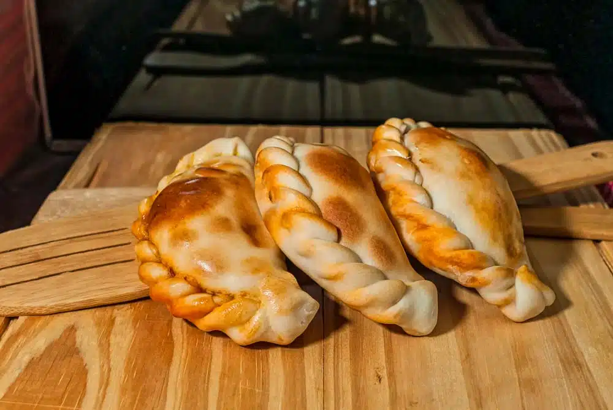

Empanadas Salteñas

Ingredientes
- 12 tapas de empanada
- 500 g carne picada
- 2 cebollas
- 1 papa hervida
- Especias: pimentón, comino, ají molido
- Huevos duros
Preparación
- Saltear cebolla, agregar carne y especias.
- Agregar papa y dejar enfriar.
- Rellenar, hacer el repulgue y hornear 25 min.
Consejo Paulinesco: ¡mejor si las hacés un día antes!